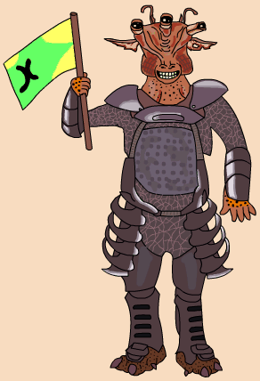

| Classification | Gran |
| Gender | Male |
| Height | 4'0'' |
| Home World | Hok |
| Podracer | Galactic Power Engineering GPE-3130 |
Mawhonic came from the Gran colony world of Hok instead of the Gran homeworld of Kinyen. Typical of Grans from Hok, he is much shorter than other Grans. Mawhonic was the first racer to crash. On the first lap, he sided up next to Sebulba. Sebulba rammed Mawhonic into the cliff face until his pod crashed. Remarkably, Mawhonic survived and went on to race in the Vinta Harvest Classic on Malastare.